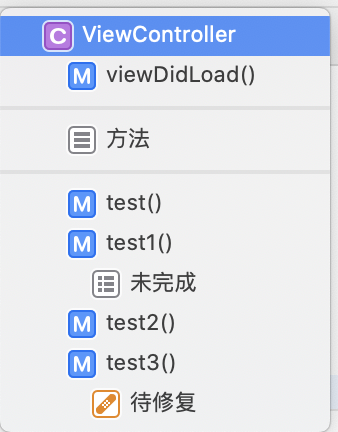
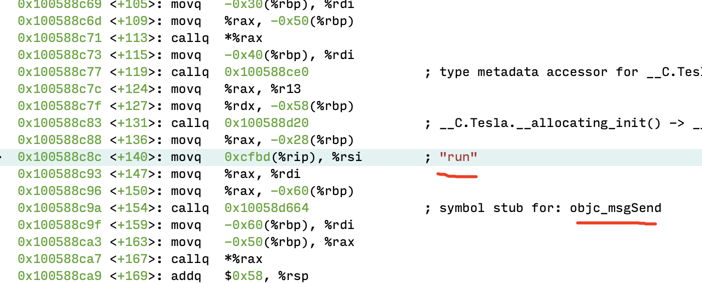
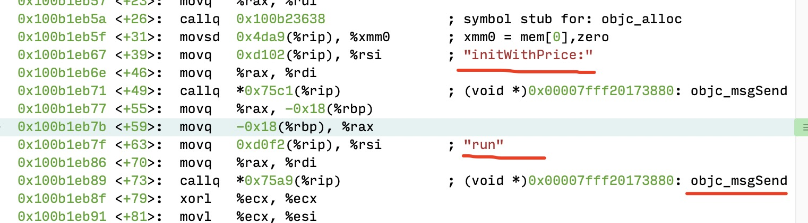
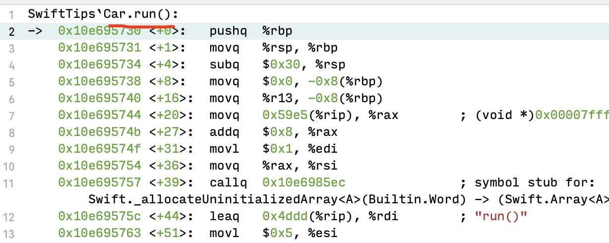
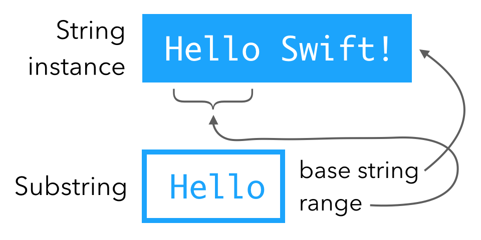
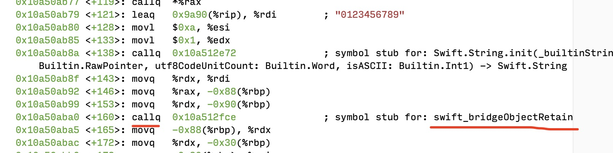
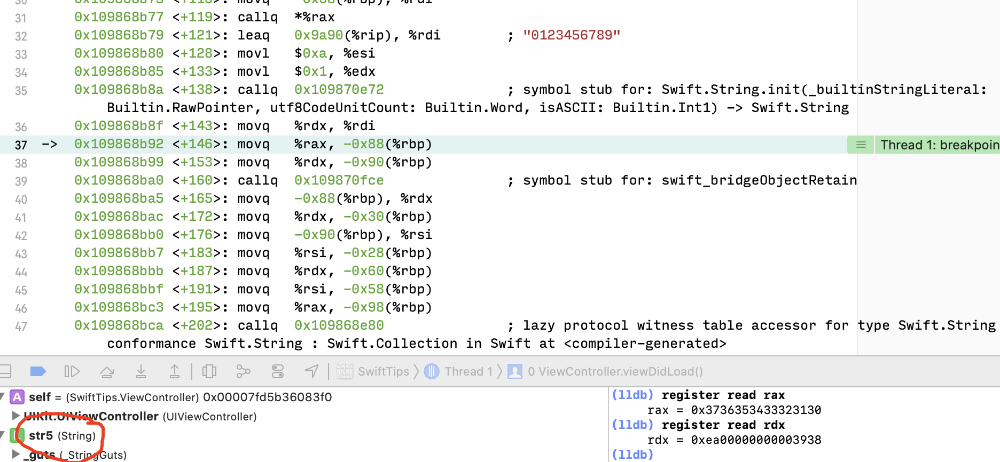
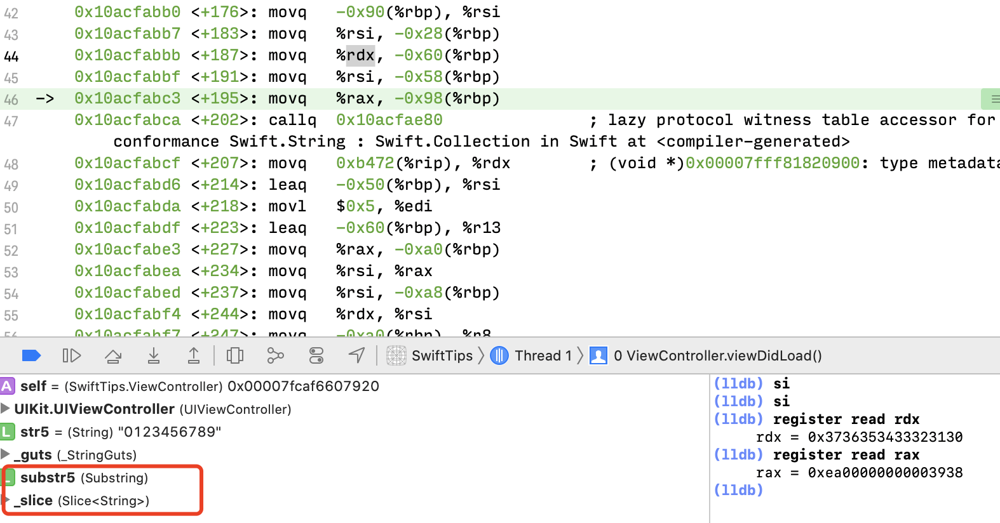
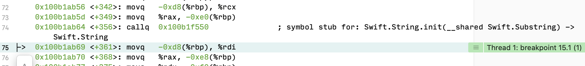

- MARK 、TODO 、FIXME
- 打印
- 全局头文件导入
- @objc
- 为什么Swift暴露给OC的类最终要继承自NSObject?
- OC暴露的方法底层在SWift是怎么调用的？反过来，OC调用Swift方法底层又是如何调用？
- swift类不用@objc修饰和用@objc调用流程一致吗？
- String
- String 重载运算符 +
- String 插入与删除
- Substring
MARK 、TODO 、FIXME
- // MARK: 类似于OC中的 #pragma mark
- // MARK: - 类似于OC中的 #pragma mark -
- // TODO: 用于标记未完成的任务
- // FIXME: 用于标记待修复的问题
- #warning(“undo”)
1 | // MARK: - 方法 - |

打印
1 | func log<T>(_ msg: T, |
全局头文件导入
1 |
|
@objc
- Swift暴露OC的类最终继承自NSObject
- 使用@objc 修饰需要暴露给OC的成员
- 使用@objcMembers修饰类
- 代表默认所有成员都会暴露给OC(包括扩展中定义的成员)
- 最终是否暴露成功，还需要考虑成员自身的访问级别
- open , public , internal , fileprivate ,private
为什么Swift暴露给OC的类最终要继承自NSObject?
因为要在OC里面调方法，而OC里面的方法调用是走objc_msgSend()机制，而runtime机制则需要isa指针，只有继承NSObject 才有isa指针
OC暴露的方法底层在SWift是怎么调用的？反过来，OC调用Swift方法底层又是如何调用？
我们创建个OC的类 Tesla
1 | @interface Tesla : NSObject |
然后我们用swift的代码来调用
1 | let tesla = Tesla() |
接下来我们来看下具体是如何调用的？

从这个就可以看出Swift调用OC的方法还是走的Runtime的机制。
继续，我们创建一个Swift的Car类
init(price:Double) {
self.price = price
}
func run() {
print(#function)
}}
然后在OC里调用 car的run方法
1 | Car *car = [[Car alloc] initWithPrice:10]; |
那么我们就看一下汇编是如何调用的？

和上面的一样，一样是走的runtime机制
swift类不用@objc修饰和用@objc调用流程一致吗？
很明显如果oc调用swift的类，那么就是走runtime机制。
如果是swift调swift方法，不管是否用objc修饰，那么都会走虚表，因为没必要再去走runtime机制，纯swift性能还是要好一点。见下图

如果实在是想走runtime机制的话，可以用关键字，dynamic修饰。
String
Swift的字符串类型String，跟OC的NSString，在API设计上还是有较大差异
1 | var emptyStr1 = "" |
String 重载运算符 +
1 | str = str + "_3" // 重载运算符 |
String 插入与删除
1 | str = "\(str)_5" |
Substring
String可以通过下标、 prefix、 suffix等截取子串，子串类型不是String，而是Substring
1 | var str3 = "1_2_3_4_5" |
Substring 的内部原理
substring类型一个神奇的地方是他们重用了父 string 的内存。你可以把 substring 理解为父 string 的其中一段。

我们可以用下面这段代码验证一下
1 | var str5 = "0123456789" |
debug时，show disassembly，我们可以看到调用了objectretain方法，而没有调用alloc方法

到这里我们可以进一步验证一下，打印一下它们两个的变量的内存地址,看是不是同一个内存地址
先看一下str5的内存地址

然后看下substr5的内存地址

它们两个字符串的内存地址是一样的，如果到这里你还有疑惑，可以看源码实现，参考链接[Swift 中 Substring 与 String] 。
当然如果重新创建字符串，如 var str6 = String(substr5)，那么就会重新分配内存空间。

DEMO地址:https://github.com/kaikaka/SwiftTips
参考链接:
__END__

文章出处：Swift Tips 与 字符串操作
作者签名：所有伟大的事情都源于梦想，始于微不足道.
关于主题：Hexo - Live For Code
版权声明：文章除特别声明外，均采用 BY-NC-SA 许可协议，转载请注明出处